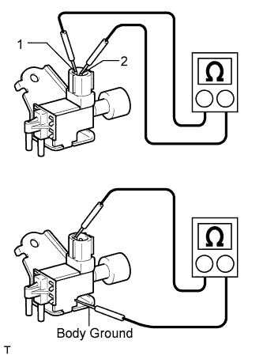
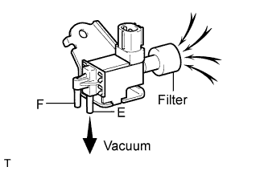
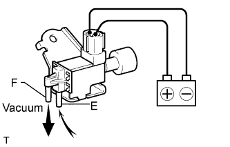

VACUUM SWITCHING VALVE (for Engine Mounting) > INSPECTION |
| 1. INSPECT NO. 1 VACUUM SWITCHING VALVE ASSEMBLY |
 |
Measure the resistance according to the value(s) in the table below.
| Tester Connection | Condition | Specified Condition |
| 1 - 2 | 20°C (68°F) | 37 to 44 Ω |
| 1 - Body Ground 2 - Body Ground | Always | 10 kΩ or higher |
Check the VSV operation.
 |
When applying vacuum to port E, check that air is sucked into the filter.
If the result is not as specified, replace the vacuum switching valve assembly.
 |
Apply voltage across the terminals.
When applying vacuum to port F, check that air is sucked into port E.
If the result is not as specified, replace the vacuum switching valve assembly.